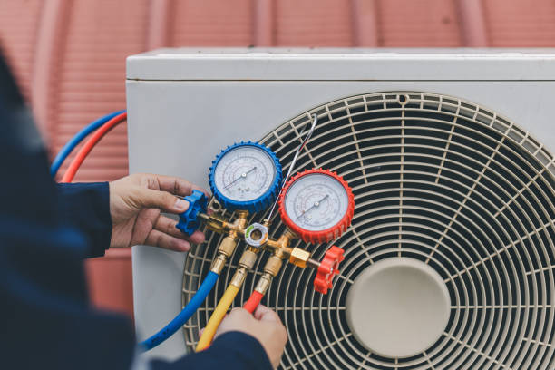

Durant Oklahoma
info@hullacrepair.xyz
Durant Oklahoma
info@hullacrepair.xyz

Top AC repair services in Durant Oklahoma . We offer quick, affordable solutions for cooling problems, ensuring your system runs smoothly even during the hottest days. Satisfaction guaranteed.
Click Here To Call Us (877) 848-1711When your air conditioning system breaks down, you need a reliable and experienced team to restore your comfort. At Ac repair, we offer top-notch AC repair services in Durant Oklahoma providing fast, affordable, and professional solutions for all your cooling needs. Our certified technicians are trained to handle all types and brands of air conditioning units, ensuring that your system is up and running quickly and efficiently.
We understand how important it is to have a functioning AC, especially during the hot summers in Durant Oklahoma . Our comprehensive services include diagnosing issues, repairing faulty components, and performing routine maintenance to prevent future breakdowns. Whether you’re dealing with uneven cooling, strange noises, or complete system failure, we have the expertise to get your AC back on track.
Why choose Ac repair for AC repair in Durant Oklahoma ? We pride ourselves on providing exceptional customer service, transparent pricing, and high-quality workmanship. Our team arrives promptly, fully equipped to tackle any challenge, and we won’t consider the job done until you’re completely satisfied.
Don’t let a malfunctioning AC disrupt your comfort. Contact Ac repair today for reliable and professional AC repair in Durant Oklahoma . Let us help you stay cool and comfortable all year round.
Residential & commercial Ac repair
Quality services at affordable prices
Immediate 24/ 7 emergency services


Is your air conditioner failing to cool your home in Durant Oklahoma ? It can be frustrating, especially during the sweltering summer months. At Hull AC Repair, we understand how crucial a well-functioning AC is for your comfort. If your AC isn’t cooling properly, there are several potential causes.
A common issue is a dirty air filter. When the filter is clogged, airflow becomes restricted, causing the unit to struggle in cooling your space. Replacing or cleaning the filter can often restore your AC’s efficiency. Another culprit could be low refrigerant levels. Refrigerant is essential for absorbing heat and producing cool air. If there’s a leak or the levels are too low, your AC won't cool effectively.
The problem might also lie with the thermostat settings. Ensure that the thermostat is set to "cool" and the temperature is lower than the current room temperature. Sometimes, a failing compressor or dirty condenser coils could be at fault. The compressor is the heart of the system, and when it malfunctions, cooling is compromised.
Don’t let a malfunctioning AC disrupt your comfort in Durant Oklahoma . At Hull AC Repair, we offer expert AC repair services across all cities in Durant Oklahoma . Our trained technicians can quickly diagnose and fix the issue, ensuring your home stays cool and comfortable. Contact us today for reliable, same-day AC repair services!
Residential & commercial Ac repair
Quality services at affordable prices
Immediate 24/ 7 emergency services
Mini-split air conditioning systems offer flexibility and efficiency, perfect for homes without traditional ductwork. Our mini-split AC repair services are designed to address the specific challenges these systems may face. Whether you’re experiencing temperature inconsistencies, airflow issues, or unusual noises, our trained technicians will diagnose and fix the problem tailored to your unit's unique needs. We pride ourselves on delivering swift service and effective solutions, making us the top choice for mini-split AC repairs in your area.

Window air conditioning units provide a convenient cooling solution, but they can encounter problems like any other system. At Ac repair, our window AC repair services in Durant Oklahoma are tailored to address common issues, from cooling inefficiencies to mechanical failures. Our experienced technicians will perform a thorough inspection, diagnosis, and repair of your window unit, restoring its performance quickly. With our friendly and professional service, we ensure your comfort is prioritized, making us the go-to option for window air conditioning repairs.

Installing a new air conditioning system is a significant investment fr your home or business. Choosing the right unit and ensuring it is installed correctly are critical factors that contribute to the efficiency and longevity of your new system. Our air conditioning installation services in Durant Oklahoma are designed to provide you with expert guidance and quality workmanship, ensuring you receive the best possible results.
Our process begins with an extensive consultation to evaluate your cooling needs. Our experienced technicians will assess your property, discuss your preferences, and provide recommendations for suitable air conditioning systems. We have a range of options, including central air conditioning, ductless systems, and high-efficiency models, to ensure we find the ideal fit for your space.
Why choose our air conditioning installation services? First and foremost, we prioritize quality and expertise. Our technicians are trained and certified to handle all aspects of installation. We are committed to following industry best practices to ensure that your new system is installed correctly and is fully operational.
Additionally, we believe in transparency throughout the installation process. Our team will explain each step, outline timelines, and ensure you are fully informed. We provide detailed pricing upfront so you can be confident in your investment.
Furthermore, our focus on customer satisfaction means we take great care during the installation process, treating your home or business with respect. Our goal is to create a positive experience, minimizing disruption to your daily life while delivering high-quality results.
Once your new system is installed, we offer ongoing support and maintenance options to help you keep it running smoothly for years to come. Regular maintenance is key to ensuring the efficiency and longevity of your system, allowing you to enjoy the benefits of a reliable air conditioning solution without worry.
In Durant Oklahoma if you're looking for professional air conditioning installation services, trust our experienced team to deliver quality results that keep you comfortable and satisfied. Your comfort is our top priority.

Installing a new air conditioning system is a significant investment, and choosing the right team is crucial. Our air conditioning installation services guarantee a seamless setup tailored to your specific needs, whether you are replacing an old unit or installing a system for the first time.
With years of experience under our belt, Ac repair ensures that each installation is done according to industry standards. We help you choose the best options based on your preferences and budget, ensuring your new system is efficient and effective.

HVAC emergencies can be disruptive and stressful. Whether you face a total system failure in the dead of winter or an AC breakdown during a heatwave, you need a reliable partner to turn to for emergency repairs. Our HVAC emergency repair services are designed to address urgent needs quickly and efficiently, ensuring your comfort is restored as soon as possible.
Our team of trained technicians is available 24/7 to respond to your HVAC emergencies. We understand that issues can arise at any time, and our commitment to prompt service means you won’t have to wait for relief. When you call us for an emergency repair, our dedicated professionals will arrive at your location as quickly as possible.
Why should you trust our HVAC emergency repair services? We take great pride in our extensive training and experience. Our technicians are skilled in diagnosing and repairing a wide variety of HVAC problems, ensuring that they can address any situation effectively. They are equipped with the tools and technology required to tackle even the most complex issues on the spot.
Furthermore, we offer transparent pricing even for emergency services. Upon arrival, our technicians will assess the problem and provide you with a clear explanation of the required repairs along with an estimate of the costs involved. You'll never be caught off guard by unexpected charges.
In addition to emergency repairs, we believe in building lasting relationships with our clients. Our technicians are friendly and approachable, ready to address any of your concerns or questions regarding the repairs or your HVAC system's performance.
Moreover, our commitment to quality ensures that we use the best materials and replacement parts during emergency repairs, aiming for effective long-term solutions rather than just temporary fixes.
If you're facing an HVAC emergency in Durant Oklahoma trust our dedicated team to provide immediate, reliable support that restores your comfort. Your peace of mind is our top priority, and we are here to help when you need us most.
Clean air ducts are essential for maintaining good air quality and efficient HVAC operation in your home or business. Over time, dust, debris, and allergens can accumulate in your ductwork, impacting both your health and your system's performance. Our air duct cleaning services are designed to enhance indoor air quality and improve the efficiency of your HVAC system.
Our team of skilled technicians is equipped to conduct thorough inspections and professional cleaning of your air ducts. We utilize advanced equipment and techniques to remove all contaminants, ensuring that your indoor air is clean and healthy.
Why choose our air duct cleaning services? We understand that clean air ducts contribute to optimal HVAC performance and the overall comfort of your living space. By removing built-up dust and allergens, you not only improve your family's health but also reduce wear and tear on your HVAC system, leading to better efficiency and potentially lower energy costs.
Moreover, we prioritize transparency in our services. Our technicians will provide a detailed assessment of your air ducts and recommend the best cleaning options based on our findings. We believe in keeping our clients informed throughout the process to ensure confidence in the work being done.
Additionally, our commitment to quality means we use high-grade cleaning equipment and materials to deliver effective results. We take great care during the cleaning process to protect your home, ensuring that everything is properly sealed and that no mess is left behind.
Regular air duct cleaning is an essential aspect of home maintenance. We recommend having your ducts cleaned every few years to keep your system running at its best. Our team can help you establish a maintenance plan tailored to your needs, ensuring you enjoy clean air and optimal HVAC performance.
, choose our professional air duct cleaning services for enhanced air quality, system efficiency, and overall comfort in your home or business. We're dedicated to delivering quality results that positively impact your environment.

Dirty air ducts can lead to poor indoor air quality and inefficient heating and cooling. Our air duct cleaning services focus on improving your home's comfort by removing dust, allergens, and debris from your ventilation system. Regular cleaning minimizes health risks and enhances air quality, and our professional team employs state-of-the-art equipment to ensure thorough cleaning.

When it comes to air conditioning repairs, you want the best in the business. At Ac repair, we dedicate ourselves to being the best AC repair company . Our reputation is built on years of providing reliable, high-quality service that exceeds customer expectations. Our team consists of certified technicians who undergo continuous training to ensure they are up-to-date with the latest technologies and best practices. We offer transparent pricing, prompt service, and a commitment to your satisfaction. Choose us as your trusted partner for all your air conditioning needs, and experience the difference that comes with the best in the industry.
Years Experience
Expert Technicians
Satisfied Clients
Compleate Projects
At Hull AC Repair, we understand the importance of a well-functioning air conditioning system, especially in Durant Oklahoma where temperatures can fluctuate dramatically. Our dedicated team of certified HVAC technicians is committed to providing top-notch AC repair services that ensure your home stays comfortable year-round.
What sets us apart is our relentless focus on customer satisfaction. We combine years of industry experience with cutting-edge technology to diagnose and repair your AC system swiftly and effectively. Our transparent pricing model means no hidden fees—just honest, upfront estimates and high-quality service.
We pride ourselves on our quick response times. Whether it's a sudden breakdown or a routine maintenance check, Hull AC Repair offers prompt and reliable solutions tailored to your specific needs. Our technicians are trained to handle all makes and models, ensuring that no matter what brand or type of AC unit you have, we have the expertise to fix it.
Moreover, our commitment to using only high-grade parts and equipment guarantees long-lasting results. We are also proud to offer flexible scheduling to fit your busy life, ensuring that your AC repair is handled at your convenience.
Choose Hull AC Repair in Durant Oklahoma for unparalleled service and peace of mind. With our exceptional skills, dedication to quality, and customer-first approach, we’re your go-to experts for all your AC repair needs. Contact us today to experience the difference.
When your air conditioning system malfunctions, the first thing you might search for is AC repair near me. That’s where we come into play! Our team of certified technicians is always ready to provide prompt, professional, and high-quality AC repair services in Durant Oklahoma . We understand that a functioning air conditioner is crucial for your comfort, especially during sweltering summer days. Our local presence means we can arrive quickly, ensuring that your home remains a cool sanctuary. Plus, our transparent pricing and dedication to customer satisfaction set us apart as the trusted choice in Durant Oklahoma .
Air conditioning units are vital for maintaining a comfortable indoor environment. Our comprehensive air conditioner repair services in Durant Oklahoma include diagnosing issues, providing repairs, and recommending maintenance plans to keep your system running efficiently. Our skilled technicians have experience working with various brands and models, ensuring that your air conditioner will be back up and running in no time. Moreover, we focus on using high-quality parts and advanced techniques to ensure the longevity of your AC system.
An unexpected AC breakdown can put your comfort at risk, especially during extreme heat. Our emergency AC repair services are designed to offer immediate solutions when you need them the most. Available 24/7, our dedicated team can swiftly address any situation, no matter how severe. We pride ourselves on our rapid response times and thorough diagnostics to ensure that your air conditioning system is restored promptly and safely.
Your HVAC system plays a crucial role in maintaining comfort in your home or office throughout the year. From heating in the winter to cooling in the summer, a well-functioning HVAC system is essential. If you’re facing issues with your HVAC unit, you need reliable HVAC repair services that you can trust, and that’s where we come in.
Our company specializes in comprehensive HVAC repair services tailored to your unique needs . We have a team of dedicated and highly trained technicians who are experts in diagnosing and repairing all types of HVAC systems. Whether it's a small residential unit or a complex commercial system, we have the skills and expertise to handle it all.
What sets our HVAC repair services apart? First and foremost, we prioritize high-quality workmanship and excellence in customer service. Our technicians are not only skilled but also committed to keeping you informed throughout the repair process. We provide detailed explanations of any problems we find and present you with valuable options for repairs or replacements.
Equally important is our commitment to using only the best quality parts and equipment. We understand that the reliability of your HVAC system depends on the components that are used during repairs. For this reason, we source our materials from reputable manufacturers, ensuring you receive the best in quality and durability.
In addition, we offer preventive maintenance services to help you avoid future HVAC issues. Regular maintenance can prolong the life of your system and enhance its efficiency, ultimately saving you money on energy costs. Our technicians can identify potential problems before they escalate, providing you with peace of mind and comfort in your home or business.
Choose us for your HVAC repair needs in Durant Oklahoma and experience the highest standard of professionalism, quality, and customer care. Our goal is not just to fix your HVAC system but to build lasting relationships with our clients based on trust and reliability.
Maintaining your HVAC system is vital for your home’s comfort, especially in varying climates. Our comprehensive HVAC repair services address all heating and cooling issues, ensuring your HVAC system operates at optimal performance. Our experienced technicians can troubleshoot complex problems and develop tailored solutions that meet your specific needs. We use advanced diagnostic tools and techniques to ensure accuracy and reliability in our repairs. We understand that HVAC issues can be costly, so we strive to offer affordable solutions without compromising quality. Choose us as your HVAC repair partner and experience the peace of mind that comes from working with trusted professionals.
We believe that quality AC repair should be accessible to everyone. Our affordable AC repair services not only provide budget-conscious solutions but also prioritize quality workmanship. We aim to offer competitive pricing without compromising service quality. With us, you can expect transparent pricing, with no hidden fees or surprise charges after the repair is complete. Our goal is to make your air conditioning problems hassle-free and as cost-effective as possible.
Your home should be a comfortable haven, free from the disturbances of an inefficient air conditioning system. Our residential AC repair services are tailored to assess and resolve any cooling issues efficiently. We offer thorough inspections and strive to educate our clients on maintaining their systems. Our commitment to customer service and satisfaction makes us a premier choice for homeowners across Durant Oklahoma .
In the heart of any thriving business lies a commitment to maintaining a comfortable environment for both employees and customers. Our commercial AC repair services are tailored to meet the unique demands of businesses, ensuring your air conditioning system runs efficiently year-round. We understand that system downtime can lead to significant losses, which is why we offer rapid service without compromising on quality. Our experienced technicians can address any issues your system may have, providing minimal disruption to your business operations. Choose us as your commercial AC repair partner and experience unparalleled professionalism and reliability.
AC problems can arise at any hour; that's why we offer 24-hour AC repair services . Our team is always on call, ready to be dispatched to your location at a moment's notice. Whether it's a late-night emergency or an early morning malfunction, you can trust our experts to provide quick and reliable repair services, restoring comfort to your space swiftly.
At Ac repair, we understand that when your AC fails, you need help fast. Our same-day AC repair services ensure that your issues are prioritized. We strive to provide prompt responses and solutions without sacrificing quality or effectiveness.
Our team of experienced technicians conducts on-site assessments quickly and efficiently, providing you with the best course of action to return your air conditioning to optimal functionality. We believe in swift resolutions while upholding high professional standards.
Regular maintenance is vital for the longevity and efficiency of your air conditioning system. Our AC tune-up services in Durant Oklahoma include comprehensive inspections and performance enhancements to prevent minor issues from evolving into costly repairs. Our expert technicians will evaluate your system comprehensively, ensuring that all components work efficiently. A well-maintained system can lead to lower energy bills and extended equipment life.
Preventive care is crucial in ensuring your air conditioning system operates smoothly year-round. Our air conditioning maintenance services in Durant Oklahoma are designed to help keep your system running efficiently while reducing the chance of unexpected breakdowns.
During our maintenance visits, our technicians will conduct thorough inspections, clean vital components, and offer solutions tailored to your system's needs. By investing in routine maintenance, you can enhance your unit's lifespan and maintain a comfortable indoor climate.
Ductless AC systems offer flexibility and efficiency in cooling, but when they malfunction, quick repairs are essential. Our ductless AC repair services specialize in diagnosing and fixing issues unique to ductless systems. Our experienced technicians can swiftly identify problems and provide tailored solutions, ensuring your ductless air conditioner returns to optimal performance quickly and effectively.
Sometimes, repairing an air conditioning system may not be the best option. If your unit is old and frequently breaking down, or if it simply can’t keep your space cool anymore, it might be time for an air conditioning replacement. Our air conditioning replacement services in Durant Oklahoma are designed to help you transition to a more efficient and reliable system, enhancing your comfort while possibly reducing your energy costs.
When considering air conditioning replacement, you need a knowledgeable partner who can guide you through the entire process, ensuring you make informed decisions. Our team of experienced technicians is here to provide comprehensive consultations to assess your cooling needs and recommend the best system for your property. We pride ourselves on our expertise in various brands and models, ensuring that you find a unit that fits both your budget and comfort requirements.
Why choose our air conditioning replacement services? First, we believe in offering customized solutions. Our team will conduct an extensive evaluation of your home and lifestyle to recommend the most efficient and appropriate air conditioning system. Whether you need a central system, a ductless option, or a high-efficiency model, we are here to ensure your new system meets all your needs.
Additionally, our commitment to quality means that we use only top-of-the-line equipment and materials during installation to ensure lasting performance and reliability. We stand behind our work and are dedicated to ensuring that you are fully satisfied with your new system.
Furthermore, we understand that replacing your air conditioning can feel overwhelming. That’s why our knowledgeable team is here to walk you through the entire process, answering any questions you may have along the way. From selecting your new unit to installation and follow-up support, we ensure a seamless experience.
Finally, we believe that a well-installed air conditioning system can significantly improve energy efficiency, saving you money on monthly bills. Our energy-efficient models are designed to provide optimal cooling performance without excessive energy consumption, ultimately benefiting both your wallet and the environment.
If you are considering an air conditioning replacement trust our team to provide the highest level of service and expertise. Your comfort is our top priority, and we are here to make the replacement process smooth and satisfactory.
Sometimes repairs just aren’t enough, and it’s time to consider a replacement. Our air conditioning replacement services are designed to help you navigate the options available, ensuring you make informed decisions about your next system. We offer a range of efficient models that can improve your comfort and lower utility bills.
At Ac repair, we handle the entire process, from selecting the right system for your needs to professional installation. Understanding the long-term investment involved, we ensure that our offerings are not only effective but also budget-friendly.
If you're experiencing problems with your air conditioning, our air conditioning troubleshooting services in Durant Oklahoma will help you pinpoint the cause. Our technicians are trained to carry out detailed diagnostics to find the source of the trouble, whether it's technical or mechanical failure. We not only fix the immediate issue but also provide advice on preventing future problems.
Heat pumps play a vital role in maintaining indoor comfort throughout the year. Our heat pump repair services focus on resolving issues efficiently to restore both heating and cooling capabilities. Our technicians are trained to handle the complexities of heat pump systems, providing fast and effective solutions.
With our commitment to quality and customer satisfaction, you can trust Ac repair to deliver top-notch repair services. We recognize the importance of a well-functioning heat pump, which is why we prioritize your needs above all.
Regular maintenance is crucial for keeping your air conditioner running efficiently, but how often should you schedule a service? For optimal performance, it’s recommended to have your AC unit serviced at least once a year, ideally in the spring before the hot summer months hit Durant Oklahoma . Hull AC Repair offers comprehensive AC tune-ups across all cities in Durant Oklahoma ensuring your system is ready to tackle the heat when you need it most.
During a routine service, our technicians check essential components like filters, coils, refrigerant levels, and electrical connections. Over time, dirt and debris can clog filters and coils, reducing airflow and efficiency. By addressing these issues, we help your system run more smoothly, which can lower energy bills and prolong the lifespan of your unit.
If you use your air conditioner year-round or live in a particularly warm area of Durant Oklahoma consider scheduling bi-annual maintenance to keep your unit in peak condition. Regular servicing not only prevents unexpected breakdowns but also helps catch minor issues before they turn into costly repairs.
Don't wait for a problem to arise—preventative maintenance is key to ensuring a cool, comfortable home. Trust Hull AC Repair for reliable AC servicing across all cities in Durant Oklahoma . Contact us today to schedule your next service and keep your air conditioner running efficiently throughout the year. A little maintenance now can save you from bigger headaches later.
Durant (/duːrænt/) is a city in Bryan County, Oklahoma, United States that serves as the headquarters of the Choctaw Nation of Oklahoma. The population was 18,589 in the 2020 census. Durant is the principal city of the Durant Micropolitan Statistical Area, which had a population of 46,067 in 2020. The city is the largest in the Choctaw Nation, ranking ahead of McAlester and Poteau. Durant is also part of the Dallas–Fort Worth Combined Statistical Area, anchoring the northern edge.
Yes, Hull AC Repair provides both AC repair and replacement services helping you upgrade to more energy-efficient systems if needed.
Strange noises could indicate a mechanical issue, such as a loose part or motor failure. Contact Hull AC Repair in Durant Oklahoma for an immediate inspection.
Common signs include weak airflow, warm air, strange noises, bad odors, or frequent cycling. Contact Hull AC Repair to diagnose and fix the issue.
Most AC repairs by Hull AC Repair can be completed within 1 to 3 hours, depending on the complexity of the issue.
Yes, Hull AC Repair has the expertise to repair older AC units but we also provide advice on when replacement might be more cost-effective.
Hull AC Repair proudly serves all neighborhoods and surrounding areas in Durant Oklahoma for AC repair services.
Yes, Hull AC Repair guarantees all AC repair services ensuring your system is fixed right the first time.
Yes, Hull AC Repair provides 24/7 emergency AC repair services ensuring your system is up and running when you need it most.
A higher energy bill may indicate your AC is struggling due to maintenance issues. Hull AC Repair in Durant Oklahoma can assess and fix the problem.
Yes, Hull AC Repair specializes in repairing ductless mini-split systems in Durant Oklahoma providing efficient service for these unique units.
Hull AC Repair services all types of air conditioning systems including central AC units, ductless mini-splits, and window units.
AC systems generally last between 10 to 15 years with proper maintenance. Hull AC Repair can help maximize your unit’s lifespan.
Yes, Hull AC Repair offers free quotes for AC repairs in Durant Oklahoma . Contact us to schedule your estimate.
If your AC is freezing, turn it off and contact Hull AC Repair in Durant Oklahoma . This could be due to airflow issues, refrigerant levels, or dirty coils.
Yes, Hull AC Repair provides emergency AC repair services to restore comfort quickly when your AC fails unexpectedly.
Short cycling can signal various issues, such as a thermostat problem or a clogged filter. Contact Hull AC Repair for an inspection.
Hull AC Repair services all major AC brands including Carrier, Trane, Lennox, Goodman, and more.
Hull AC Repair recommends servicing your AC unit at least once a year to maintain optimal performance and avoid breakdowns.
The cost of AC repair depends on the issue, the system type, and labor involved. Hull AC Repair offers free estimates to provide an accurate quote.
While Hull AC Repair focuses on AC repair, we also offer duct cleaning services to improve your indoor air quality and system efficiency.
If your AC is blowing warm air, contact Hull AC Repair . It could be a refrigerant issue, thermostat problem, or dirty filters.
Hull AC Repair offers same-day and next-day service for AC repairs in Durant Oklahoma depending on availability.
Signs of low refrigerant include warm air and ice on your AC unit. Hull AC Repair can check and refill refrigerant if necessary.
Yes, Hull AC Repair offers solutions like air purifiers and filtration systems to improve indoor air quality .
In many cases, repairing your AC in Durant Oklahoma is more affordable, but Hull AC Repair will recommend replacement if repairs become frequent or costly.
Hull AC Repair recommends setting your thermostat to around 78°F when you’re home for optimal energy savings and comfort .
Regular maintenance, filter changes, and upgrading to a programmable thermostat are some ways Hull AC Repair can help improve your AC’s energy efficiency.
Yes, Hull AC Repair offers flexible financing options for larger AC repair and replacement services .
Yes, Hull AC Repair offers comprehensive maintenance plans to help keep your AC system running efficiently year-round.
Regular maintenance, filter replacements, and seasonal tune-ups from Hull AC Repair can prevent breakdowns and extend the life of your system.
Top-notch AC repair service in Durant Oklahoma ! Hull AC Repair's team was professional, punctual, and efficient. I highly recommend them for any AC issues.
Profession
Hull AC Repair did an amazing job in Durant Oklahoma . Their technician was on time, professional, and fixed our AC quickly. Great service overall!
Profession
I’m very impressed with Hull AC Repair in Durant Oklahoma . Their technician was knowledgeable, courteous, and fixed our AC problem without delay. Great service!
Profession
Durant OK Ac repair Pros
(877) 848-1711
info@hullacrepair.xyz
09.00 AM - 09.00 PM
09.00 AM - 12.00 PM